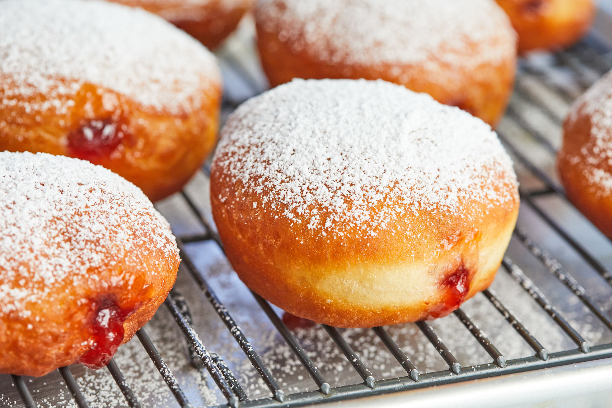

Classic Jelly Donuts

Ingredients
- 3-1/4 to 3-3/4 cups all-purpose flour
- 2 envelopes (4-1/2 tsp.) rapid rise yeast
- 2 tablespoons granulated sugar
- 1 teaspoon salt
- 1 cup plus 2 tablespoons milk
- 1/4 cup butter
- 3 egg yolks
- Vegetable oil, for deep frying
- 1/2 cup strawberry jam
Instructions
- In a large mixer bowl, combine sugar, salt, undissolved yeast, and 2 cups flour. Warm milk and butter to a temperature of 120F to 130F. Beat on low speed for two minutes after adding to flour mixture including egg yolks. Flour should be added gradually till soft dough forms.
- On a surface dusted with flour, knead for 4 to 6 minutes, or until smooth and elastic. Shut off and give it a ten-minute rest. Using a lightly floured surface, roll out the dough into a 12-inch circle that is about 1/2 inch thick. Press as many rounds as you can out of a 3-inch cookie or biscuit cutter.
- Slightly grease or line a baking sheet with parchment paper, then space the doughnuts approximately 2 to 3 inches apart. Reroll the leftover dough and cut it. Doughnuts should be covered and given 45 to 1 hour to rise.
- In a deep fryer or deep pan, heat the oil to 350F with at least 2 inches in depth. Get your filling ready while the oil heats up. Fill a pastry bag with the jam and secure the metal tip with a large opening so the jam can seep through. Set aside.
- Add 2 to 3 doughnuts at a time and fry, rotating them occasionally, until they are nicely browned, 2 to 3 minutes. Remove from oil and lightly drain on paper towels.
- Toss the donuts in granulated sugar. Insert the pastry tip into the side of each donuts and firmly squeeze a few Tablespoons of jam into the center of the donut. Cool a few minutes, then transfer to wire rack. Serve warm.